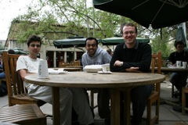
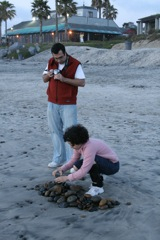

|
This is one of the earliest photos I have of Philadelphia... We were invited to come visit UPenn to check out our new home.. While roaming around campus that day, we stumbled upon this sandy treat next to the bookstore! |
The potluck dinner with the Pasadena folk the day before our roadtrip to Philadelphia :P |
On the roadtrip, I entertained myself with my camera! I did eventually go on to lose this camera in a Philadelphia taxicab within hours or finishing the roadtrip... On the bright side, that made me upgrade to an SLR :P |
|
My love for photography has only grown in the pasy few years... Here I'm playing with Rafi's ancient film Nikon. |
Promptly after arriving in Philadelphia, I got homesick and ran off to India to celebrate Diwali.... As a student, you can take a vacation whenever! :) This was quite possibly the biggest attraction of being a PhD student :) |
Upon returning from India, I moved into my new home at Park Towne near the Art Museum... I will spend the next 3 1/2 years in this studio... Many friends and family will visit me here... and I will have front row seat to experience global warming :) |
|
A humble start with no furniture and a few rag-tag set of belongings.... |
I started to explore my surroundings and I discovered the pretty Schuylkill river... It has a pretty row of boat clubs and a wonderful jogging trail of Fairmount Park... Over the next few years, I spent several amazing evenings jogging around this river... quite possibly one of the better things in Philadelphia |
At Penn, I kept some old friends and made some new ones... |
|
The Parkway was my home.. It was always beautiful but especially so during Fall... |
Every Fall the trees in Philadelphia would turn various exciting shades of yellow, brown and orange... The best fall was probably 2010.. a few years later... |
Slowly a home took shape... By November, I had furnished the apartment and moved in properly... |
|
But of course, my primary responsibility was still graduate school? Right?... Naah, who am I kidding? :P |
During one of my visits to Pasadena, I finally saw the much-touted Pasadena Rose Parade... The rose-petal duck made it acceptable.... |
During my first Pasadena trip back, our lab was empty but we still left behind sketches of our road trip plans from several months ago.... No one had bothered to clean it.. |
|
In 2007, the lab started to lose focus... everone meandered around for a while... not much research got done :P |
And during this time, Philadelphia got a liberal dusting of snow... It was my first winter snow.. What a surreal landscape? |
But I can never stay far away from Caltech this year... I went back again in 2007... Now I've upgraded my DSLR to newer lenses... I photograph the Catalina Apartments.. the Caltech campus housing complex for graduate students. which was my home for 3 years... |
|
 Todor, me and Mikhail meet for coffee at the Red Door during this visit... Todor has since returned to Romania (to the best of my knowledge) and Mikhail is working in the Bay Area (for a consultancy?)... |
My ex-roommate Dr. Abhishek Saha plays in the pools of Palm Springs... This was during an outing organized by the ISP.. easily one of the most outstanding international programs office anywhere in the country... Abhishek is now cooling his heels in Swiss snow.. |
During this ISP trip, we took a cable car up to San Jacinto peak... and the view from above was dramatic to say the least... |
|
Palm Springs also happened to be home to adventure seeking elementary school kids... |
I visited Helia and Amir in San Diego. It was a warm, sunny day. We went to a farmer's market in Del Mar. We got fresh flowers and tasty strawberries. |
 Helia and Amir playing on the beach ;) Helia assembles pebbles into a tower while Amir looks on. |
|
The Persian new year had just happened earlier in the week. The decoration seen in the front is called 'Haft-sin'. It is assembled specially for the new year festival. |
During that trip to San Diego, I also caught up with some old friends from Paxonet.... Here we're at the La Jolla Cove, just as the sun was setting... |
Two words: Betta Dawson! |
|
Visits to Pasadena were never complete without a game of "Maaa" aka Settlers |
Back in Philadelphia, spring had settled over the region... Ducks in particular seemed to enjoy the weather.. |
I also started to cook more often and keep myself well-fed :) |